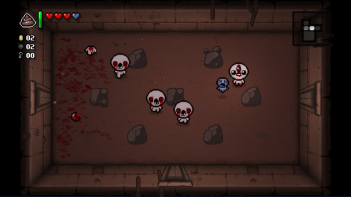
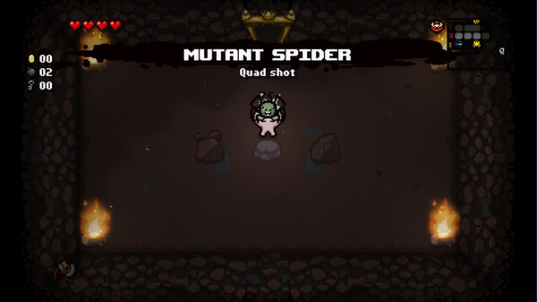
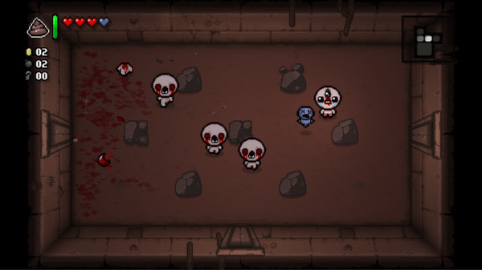
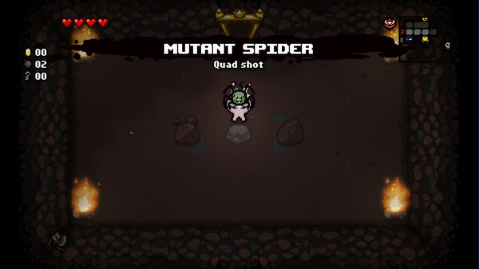

Introducción
“The Binding of Isaac” es un juego de acción y exploración con estilo roguelike que, a pesar de no tener gráficos tan pesados como los de un juego moderno en 3D, sí requiere ciertos recursos cuando se lo quiere transmitir en vivo (streaming). Por eso, es importante diferenciar entre los requisitos básicos para correr el juego y los que se recomiendan cuando además se utiliza un programa de transmisión como OBS Studio, Streamlabs u otro software similar.
 


